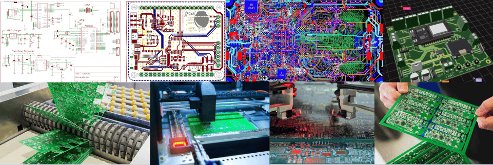
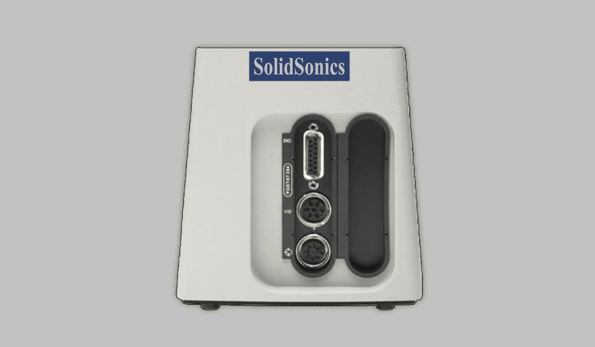
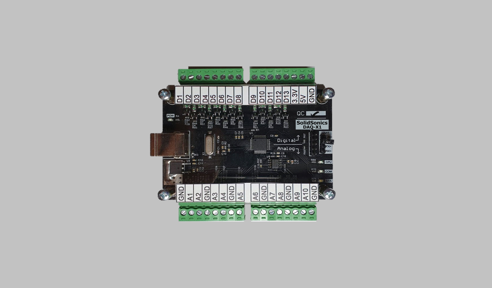

circuit customization support
At SOLIDSONICS, we take pride in offering comprehensive CIRCUIT CUSTOMIZATION SUPPORT, a full-spectrum, one-stop-shop service designed to bring your electronic concepts to life. Our expertise spans from initial design schematics to the final selection of components, layout planning, and the production of prototype PCBs. We are not just about assembling pieces; we ensure that every stage — from SMT (Surface Mount Technology) to rigorous testing — is executed with precision.
Our services extend to cater to highly specialized requirements, enabling the development of custom-designed circuits tailored for unique materials and the specialized functionality of advanced sensors. Whether you are looking to innovate within a niche market or require bespoke solutions for complex sensor functionalities, SOLIDSONICS is equipped to engineer circuits that meet your exact specifications, ensuring functionality, reliability, and efficiency.

SOLIDSONICS Equipments
Discover our latest array of cutting-edge equipment models!

AnalysisStation-X2
The ANALYSISSTATION-X2 stands at the forefront of electrochemical innovation, offering a versatile platform for both electrical and electrochemical characterizations. Designed with customizability in mind, this advanced instrument is equipped with miniaturized potentiostats and galvanostats, making it perfectly suited for a wide range of electrochemical applications. Whether it's for academic research, industrial development, or quality assurance testing, the ANALYSISSTATION-X2 provides precise control and reliable measurements, ensuring that your electrochemical analysis is both accurate and efficient. With SOLIDSONICS's commitment to excellence, the ANALYSISSTATION-X2 is the tool of choice for professionals demanding the highest standards in electrochemical instrumentation.
Learn more

SensorStation-IC1
SENSORSTATION-IC1 is an exceptional multi-channel readout system engineered to revolutionize sensor data acquisition. Capable of interfacing with up to 128 channels, this device is designed to cater to a multitude of sensors, delivering high throughput and exceptionally precise measurements. Its advanced architecture ensures rapid data collection without sacrificing accuracy, making it an ideal choice for complex experimental setups and high-demand environments. Additionally, SENSORSTATION-IC1 boasts optional wireless data transmission, providing the convenience of remote monitoring and data analysis. To complement this capability, it offers customizable backend visualization software, allowing for a tailored data presentation that meets the specific needs of any project. With SENSORSTATION-IC1, expect unparalleled performance in sensor data handling, designed to elevate research and application outcomes to new heights.
Learn more